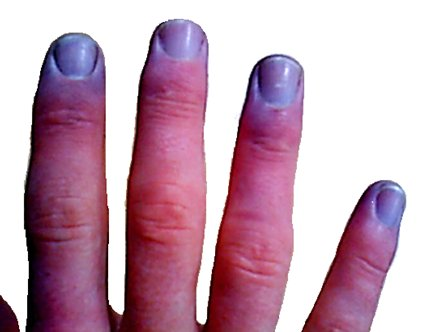
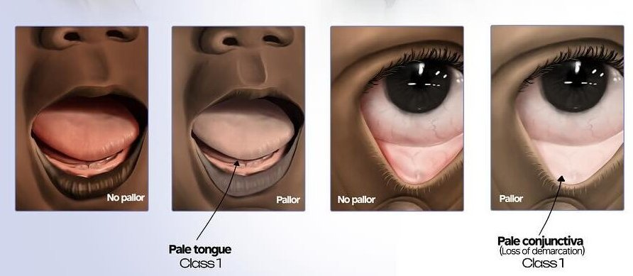
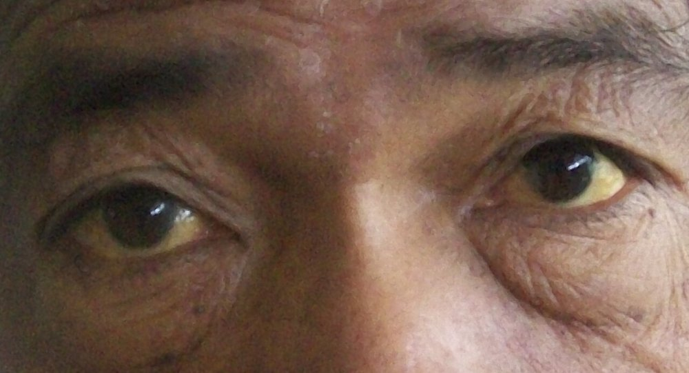
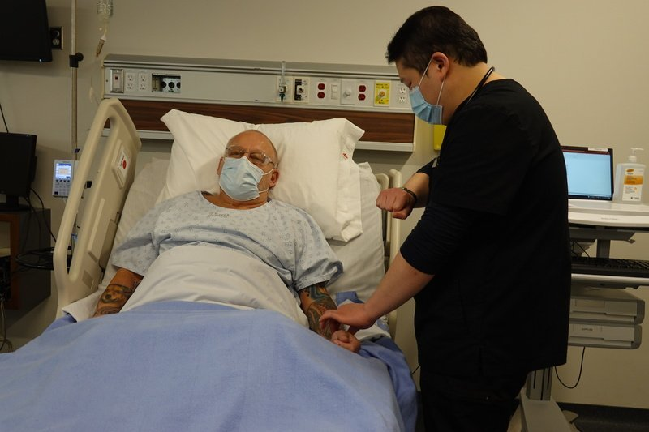
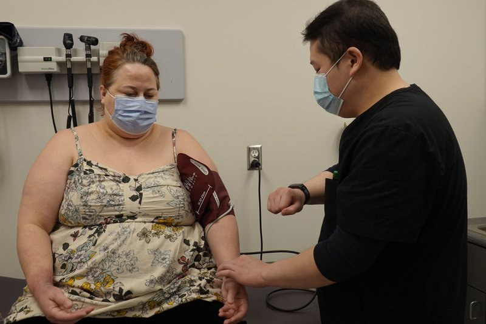
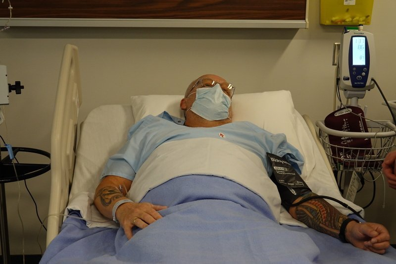

The first thing you do in every exam: look at the patient, then pulse, breathing and blood pressure. Each part has its numbered steps and what counts as positive. This is the core Year 1 session only.
Look: everything shown. Pick a region below to jump to it.
The survey starts the moment you meet the patient. Anything paired is checked on both sides and compared.
General approach
Every exam
The general approach
Say it first (TOSCE): "Hello, I'm ___, a medical student. Can I check your name against your wristband? I'd like to check your vital signs, which means feeling your pulse and taking your blood pressure in both arms. Is that alright?" Then wash your hands (15 seconds), clean the stethoscope, and put on any protective equipment needed.
Set up: comfort, modesty and confidentiality: draw the curtain, drape properly, adjust the room to suit the patient and you, and watch for signs of discomfort throughout
explain each step in plain words ("I'm going to feel your pulse"), with clear, respectful instructions
warm your hands and instruments; patient relaxed, sitting or lying
Pulse: radial, counted and described, then the other side
Respiratory rate: counted while you still seem to be taking the pulse
Blood pressure: both arms, then an orthostatic (lying-to-standing) check
Temperature: know the normal values by site (understand the technique; it is not performed in the session)
Tap to reveal
General inspection
PPES 1 · Week 1 · 5 signs and manoeuvres
How to do it
The routine
A. General appearance and manner: awareness, dress, speech, posture, gait, greeting and shaking hands, facial expression, relationship with accompanying relatives
Ill or well? Any acute distress:
cardiac or respiratory: shortness of breath (dyspnea), laboured breathing, wheezing, chest pain, pallor, sweating (diaphoresis), cough
pain: sweating, wincing, guarding the painful area
anxiety: anxious face, fidgety, cold or moist palms
depression: flat affect, poor eye contact, slowed movement (psychomotor slowing)
dress, grooming, hygiene: right for the weather, and for age and circumstances?
scan the room for hints: bedside items, walking aid, oxygen tank, IV line
B. Mental state and behaviour: mood, orientation, memory, attention, concentration, intelligence, insight and judgment
level of consciousness: awake, alert, responding to you?
D. Body habitus: body structure and proportions, including nutritional status
short or tall; slender, muscular or stocky; emaciated, slender, plump, obese
if overweight, the fat distribution: gynoid (pear, hips) or android (apple, belly)
symmetry, posture, position, deformities
E. Complexion and skin colour: degree of pigmentation, and pallor, plethora, cyanosis or jaundice (where to look is in the table)
other skin signs: dry skin, hair loss or excess hair (hirsutism), rashes, bruising
F. Involuntary movements: twitching of the face, tremor of the hands, or limited movement (e.g. paralysis)
G. Abnormal odours: body odour, alcohol or drugs
fruity (acetone) breath → a clue to diabetes
Tap to reveal
Colour of the skin
Central cyanosis
Low blood oxygen from lung or heart disease
Steps
Look at the lips
Look inside the mouth and under the tongue
Positive
Blue lips and tongue
Tap to reveal
Peripheral cyanosis
Poor blood flow to the hands and feet

Steps
Look at the fingers and toes
Positive
Blue fingers and toes
Tap to reveal
Pallor
Anemia

Steps
Gently pull down the lower lid and look at the conjunctiva
Look inside the mouth, at the nail beds and the palm creases
Positive
Pale (the inner rim of the lower lid is not red)
Tap to reveal
Plethora
Redness, e.g. from inflammation
Steps
Look at the skin wherever it shows
Positive
Red skin
Tap to reveal
Jaundice
Yellowing from bilirubin (e.g. liver disease)

Steps
Ask the patient to look up
Gently pull down the lower lid
Look at the whites of the eyes
Positive
Yellow whites of the eyes (scleral icterus)
Tap to reveal
Pulse
PPES 1 · Week 1 · 1 signs and manoeuvres
How to do it
The routine
Say first: "Hello, I'm ___, a medical student. Can I check your name against your wristband? I'd like to check your vital signs, which means feeling your pulse and taking your blood pressure in both arms. Is that alright?"
Use the radial pulse (wrist, thumb side): press with the pads of your index and middle fingers until you feel it
Describe rate, rhythm, amplitude and contour, then symmetry
Tap to reveal
Rate, rhythm, amplitude, contour
Radial pulse
Rate, rhythm, amplitude, contour, symmetry

Steps
Index and middle finger pads on the radial artery
Count for 15-30 seconds (×4 or ×2 = beats per minute)
Rhythm: regular, regularly irregular, or irregularly irregular?
Amplitude (strength): normal, decreased or increased?
Contour (shape): upstroke and downstroke, single or double peak?
Feel the other wrist and compare
Positive
Under 60 = bradycardia · over 100 = tachycardia · irregular · weak or bounding · unequal sides (normal: 60-100, regular, normal amplitude, single peak, equal)
Tap to reveal
Pearls
Remember
*"Heart rate is 80 beats per minute, regular rhythm, normal amplitude. Radial pulses are symmetrical."*
Tap to reveal
Respiratory rate
PPES 1 · Week 1 · 1 signs and manoeuvres
How to do it
The routine
Always look for signs of respiratory distress: the one thing never to skip
can't speak in full sentences, fast breathing (tachypnea)
pursed-lip breathing, nasal flaring
tripod position (leaning forward, hands on knees)
accessory muscle use (neck muscles working to breathe), intercostal retractions (skin sucked in between the ribs)
cyanosis, central or peripheral
First look at the trachea: is it in the midline?
Describe rate, rhythm, depth and effort
Abnormal patterns to recognise: wheezing, stridor, Cheyne-Stokes breathing (breaths grow deeper then shallower, with pauses between), Kussmaul breathing (deep, laboured breathing from acidosis)
Tap to reveal
Rate and distress
Counting the respiratory rate
Rate, rhythm, depth, effort
Steps
Keep your fingers on the radial pulse
Watch the chest rise without telling the patient (breathing changes when people know they're being watched)
Count for 15-30 seconds and multiply up
Positive
Too slow = bradypnea · too fast = tachypnea · irregular, shallow or laboured (normal adult: 14-20 breaths per minute, regular, effortless)
Tap to reveal
Pearls
Remember
*"Respiratory rate is 16, with regular rhythm, depth and effort. No signs of respiratory distress such as tripod positioning or accessory muscle use."*
Tap to reveal
Blood pressure
PPES 1 · Week 1 · 3 signs and manoeuvres
How to do it
The routine
Measure in both arms and assess for an orthostatic change
Set up: patient relaxed, sitting or lying, legs uncrossed, arm supported at the level of the heart, not above it (a pillow under the arm)
Cuff size matters: a cuff that is too short or too narrow reads falsely high, and a regular adult cuff on a large arm can wrongly diagnose high blood pressure
centre the cuff's artery line over the brachial artery, lower edge about 2.5 cm (two fingers) above the elbow crease
feel the brachial pulse first (inner elbow, just inside the biceps tendon) to confirm it is there
Tap to reveal
Before the reading
Palpated systolic estimate
Where to pump the cuff to

Steps
Feel the radial pulse
Inflate quickly until the pulse disappears
Add 30 mmHg: this is your target pressure
Deflate fully
Positive
Sets the target, so you don't pump painfully high and don't miss the auscultatory gap (a silent stretch heard in some patients with high blood pressure or aortic stenosis)
Tap to reveal
The reading
Auscultated blood pressure
Systolic and diastolic pressure

Steps
Bell lightly over the brachial artery (Korotkoff sounds are low-pitched)
Inflate quickly to the target
Deflate about 2-3 mmHg per second
First Korotkoff sound = systolic
Keep going: sounds disappear = diastolic; listen a little lower to be sure
Deflate to zero; report to the nearest 2 mmHg
Repeat on the other arm
Positive
Office reading 130/80 or more → confirm outside the office (home or ambulatory monitoring) before calling it hypertension (normal: about 120/80; 5-10 mmHg difference between arms can be normal)
Tap to reveal
Lying to standing
Orthostatic blood pressure
Orthostatic hypotension
Steps
Patient lying down for at least 5 minutes, then measure
Patient stands; measure again after 1-3 minutes (support the arm at heart level)
Positive
Systolic drops 20 mmHg or more, or diastolic drops 10 mmHg or more, from lying to standing
Tap to reveal
Pearls
Remember
*"Blood pressure is 118/76 in the right arm and 120/78 in the left, with no orthostatic drop."*
Blood pressure normally varies with age, sex, time of day, weight, exercise, stress and substances such as smoking.
A heart rate rise of 30 or more on standing suggests orthostatic tachycardia extra.
Tap to reveal
Temperature and SpO2
PPES 1 · Week 1
How to do it
The routine
Temperature: understand the technique (it is not performed in the session). The normal value depends on the site:
oral 37.0 °C · rectal 37.4-37.5 °C · axillary (armpit) 36.5 °C
oral temperature swings through the day: as low as 35.8 °C in the early morning, up to 37.3 °C in the late afternoon or evening
Oxygen saturation (SpO2) is listed with the vital signs but not measured in the session; normal is above 94%extra
Tap to reveal
Normal values
PPES 1 · Week 1
How to do it
The routine
Pulse: average 80, range 60-100 beats per minute
Blood pressure: average 120/80 mmHg
Respiratory rate: 14-20 breaths per minute
Temperature: 37.0 °C oral, range 35.8-37.3 °C
⚠ Never finish the vitals without a word on respiratory distress, even when the answer is "none".
Tap to reveal
Videos
Intro and set-up clips from the Health Education Media Library (Western Libraries), CC BY-NC 4.0, played from the library's own server. The vital signs walkthrough is by Geeky Medics. Each opens only when you tap it.
Image credits
Images reused under their open licences (Creative Commons or public domain). Some were cropped to hide faces.
Radial pulse: Clinical Skills teaching set, Schulich School of Medicine and Dentistry (Health Education Media Library, Western Libraries), CC BY-NC 4.0, source
Counting the respiratory rate: Clinical Skills teaching set, Schulich School of Medicine and Dentistry (Health Education Media Library, Western Libraries), CC BY-NC 4.0, source
Palpated systolic estimate: Clinical Skills teaching set, Schulich School of Medicine and Dentistry (Health Education Media Library, Western Libraries), CC BY-NC 4.0, source
Auscultated blood pressure: Clinical Skills teaching set, Schulich School of Medicine and Dentistry (Health Education Media Library, Western Libraries), CC BY-NC 4.0, source
Peripheral cyanosis: 7mike5000 (derivative of a Wikimedia Commons photo), CC BY-SA 3.0, source


.JPG){kind=link}